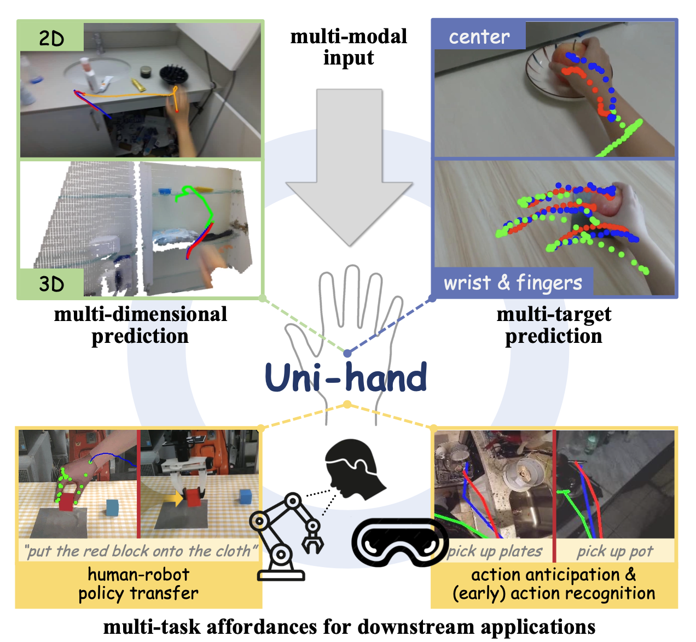
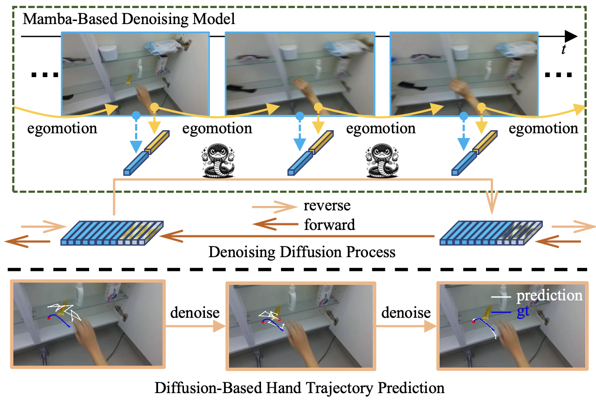
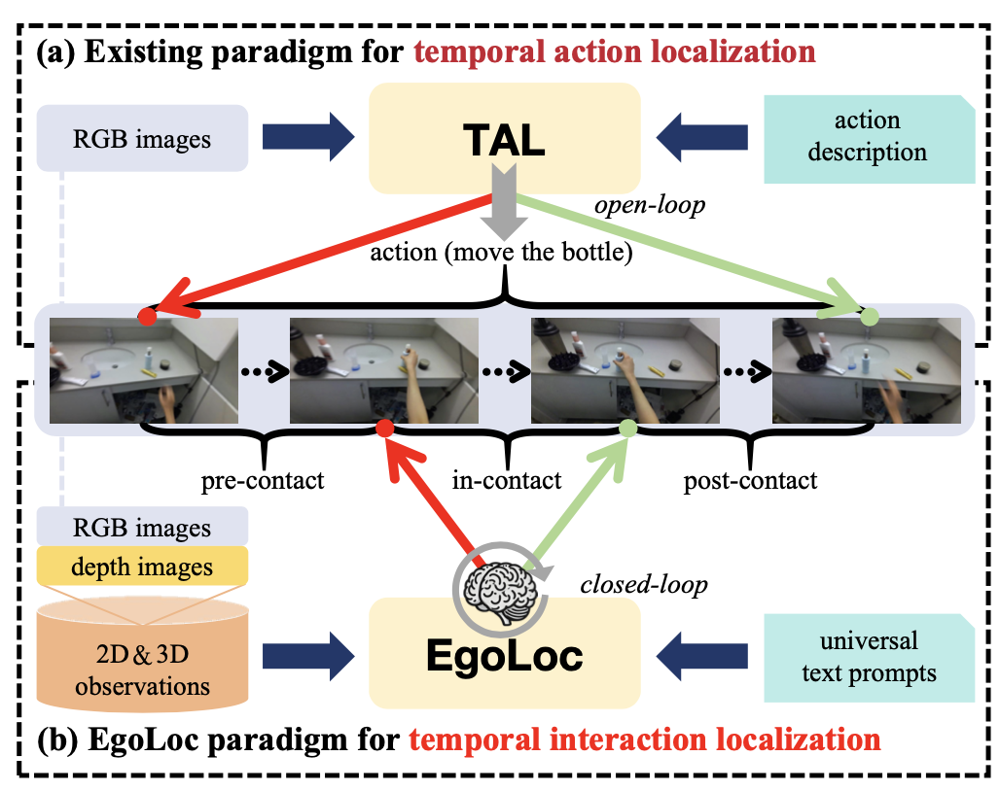
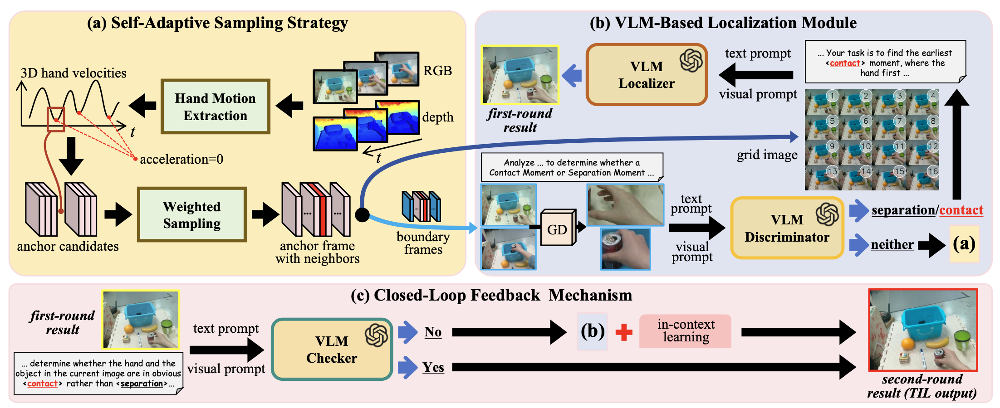
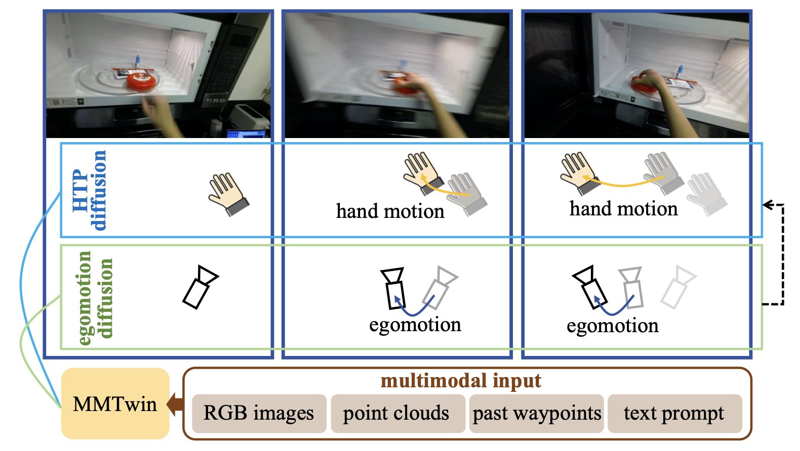
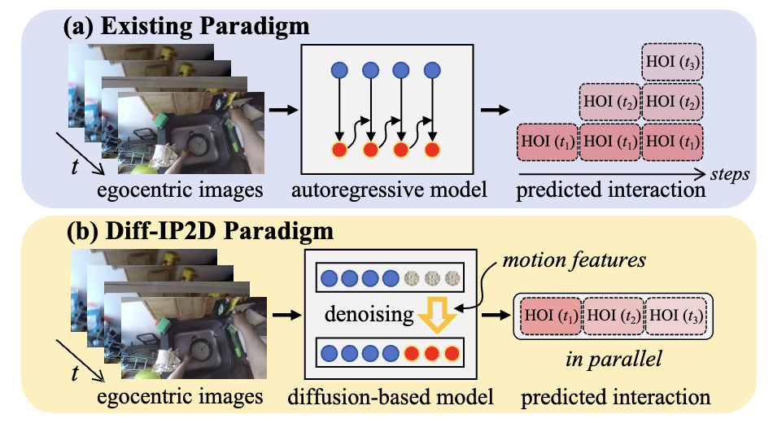
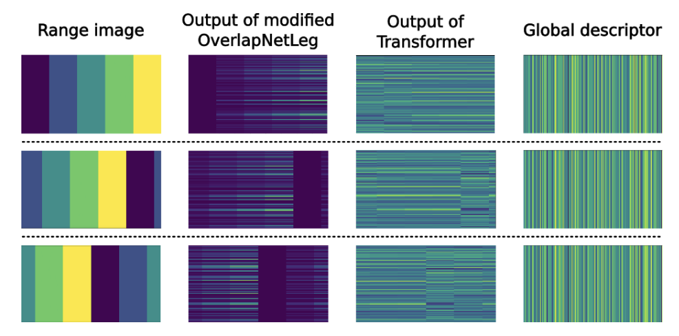
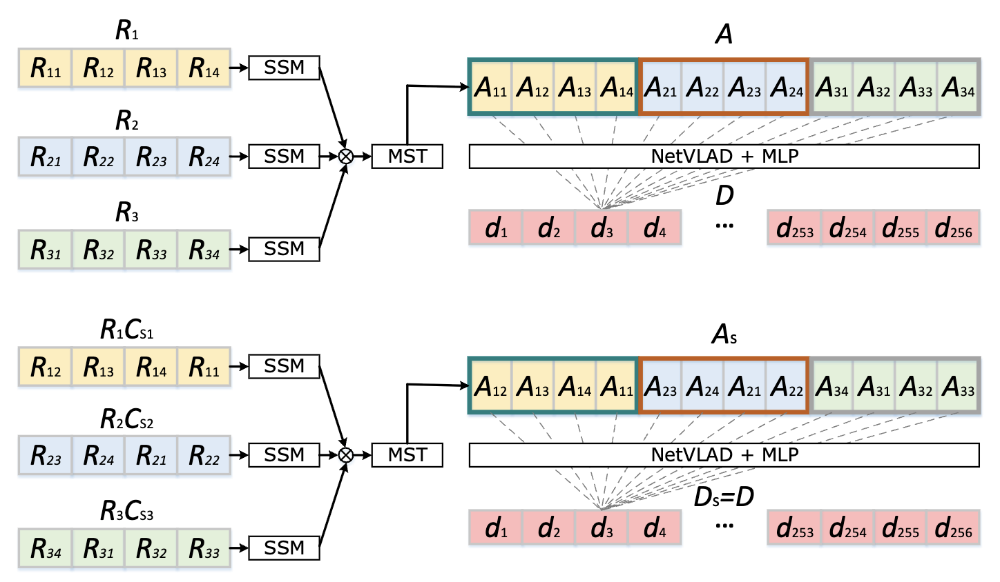
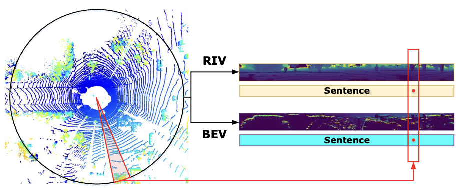
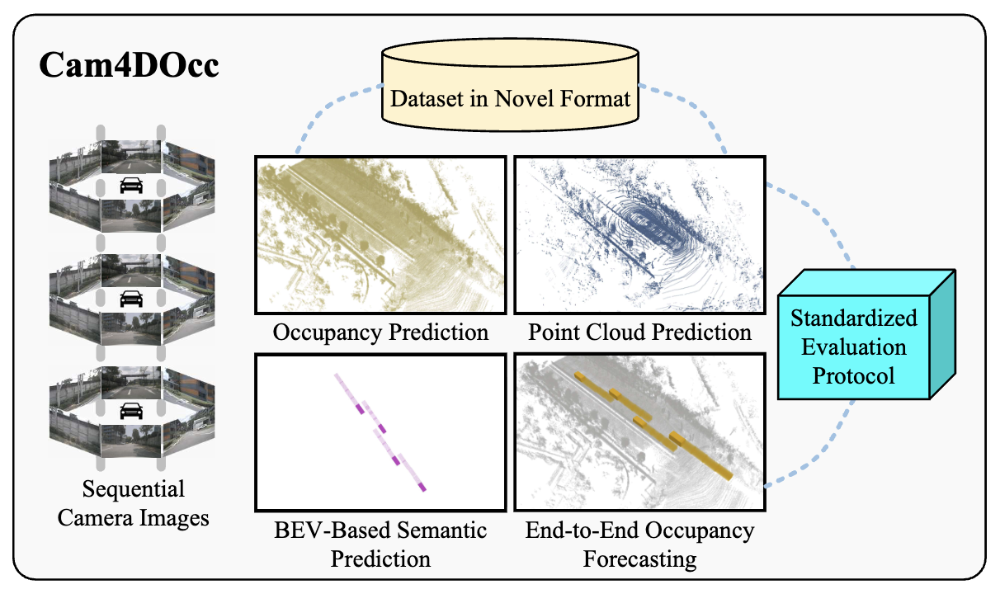

I am a Ph.D. candidate at IRMV Lab, Shanghai Jiao Tong University, advised by Prof. Hesheng Wang.
My research explores how robots can learn from human behavior and understand dynamic 3D environments, with a focus on visual imitation learning, egocentric hand-object interaction prediction, place recognition, and occupancy forecasting.
🔥 News
- May 2026: Selected as an Outstanding Reviewer of IEEE Robotics and Automation Letters (RA-L).
- May 2026: Uni-Hand has been accepted by T-PAMI.🎉
- Nov. 2025: MADiff has been accepted by T-PAMI.🎉
- Jun. 2025: Four papers have been accepted by IROS 2025.🎉
- Feb. 2025: Spatiotemporal Decoupling for Efficient Vision-Based Occupancy Forecasting has been accepted by CVPR 2025.🎉
📝 Publications
#: Equal contribution, *: Corresponding author.
Learning from Human Videos
arXiv 2026
Robot Learning from Human Videos: A Survey
Junyi Ma, Erhang Zhang, Haoran Yang, Ditao Li, Chenyang Xu, Guangming Wang, Hesheng Wang*
T-PAMI 2026

T-PAMI 2025

IROS 2025

Preprint

HOI Prediction
IROS 2025

IROS 2025

Place Recognition and SLAM
RA-L / IROS 2022

TIE 2022

TII 2023

Point Cloud and Occupancy Forecasting
CVPR 2024

🏆 Honors and Awards
- Outstanding Master's Thesis, Beijing Institute of Technology, 2023.
- National Scholarship for Graduate Students, Ministry of Education of China, 2022.
- National Scholarship for Undergraduate Students, Ministry of Education of China, 2019.
- Outstanding Master's Graduates in Beijing, 2023.
- Outstanding Bachelor's Graduates in Beijing, 2020.
- Best Paper Award at IEEE International Conference on Unmanned Systems (ICUS), 2021.
- Outstanding Paper Presented at the Autonomous Robotic Technology Seminar (ARTS), 2023.
🎓 Educations
- Shanghai Jiao Tong University, Ph.D. candidate at IRMV Lab. Supervisor: Prof. Hesheng Wang.
- Beijing Institute of Technology, M.S. in Mechanical Engineering, 2023. Supervisors: Prof. Guangming Xiong and Prof. Xieyuanli Chen.
- Beijing Institute of Technology, B.S. in Mechanical Engineering, 2020. Bachelor thesis advisor: Prof. Oliver Dürr.
📦 Datasets
- Haomo Dataset: mobile-robot LiDAR dataset collected in urban Beijing. Description
- Cues-Poses Dataset: a toy dataset about mapping multiple cues to mutual poses of robots. Description
- Cam4DOcc: benchmark for camera-only 4D occupancy forecasting. Description
- CABH Benchmark: egocentric videos capturing human hands performing simple object manipulation tasks. Description
📄 Patents
- [China Utility Model] Huilong Yu, Ziang Tian, Junyi Ma, Haotian Dong, Junqiang Xi, and Guangming Xiong. A multifunctional unmanned platform for subterranean space. ZL202123083457.8
- [China Appearance Design] Huilong Yu, Ziang Tian, Junyi Ma, Haotian Dong, Junqiang Xi, and Guangming Xiong. A multifunctional unmanned caterpillar for subterranean space. ZL202130813635.4
- [China Invention Publication] Guangming Xiong, Junyi Ma, Jingyi Xu, and Jiarui Song. A reliability analysis-based multi-robot cooperative localization and mapping method. ZL202110318362.5
🤝 Service
- Reviewer of TRO, TMM, RA-L, TASE, TCSVT, ICRA, and IROS.
- Student Executive Committee Member of Autonomous Robotic Technology Seminar (ARTS).